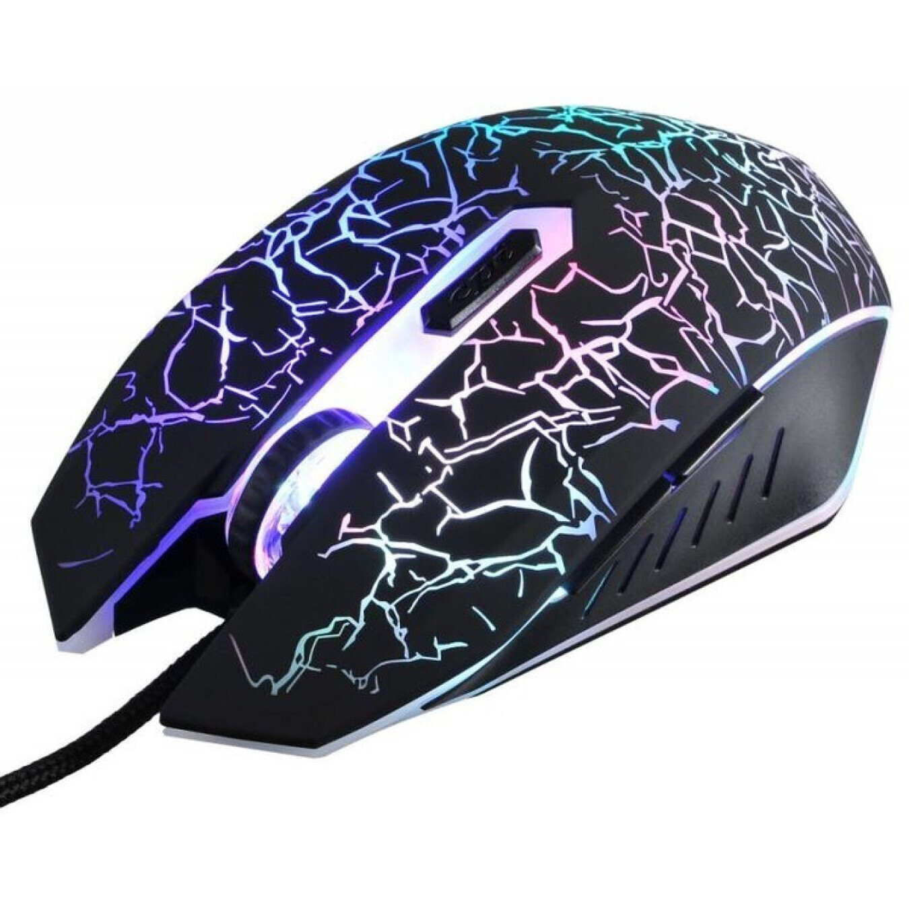
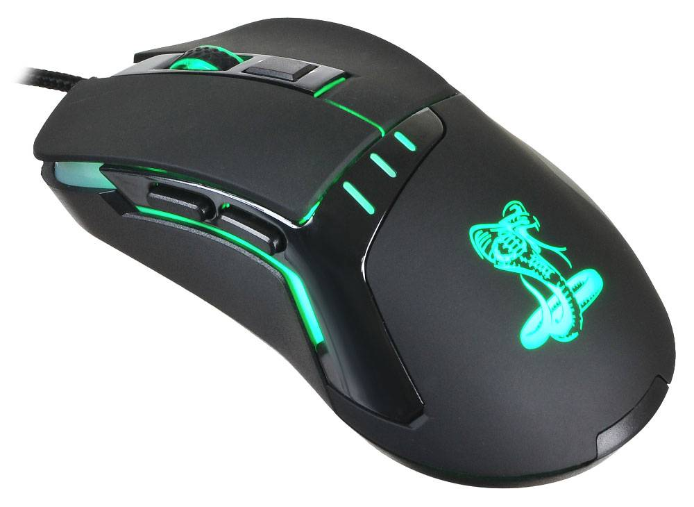

всем привет на моем третьем сайте
Мышь – то устройство, которое рядовые пользователи покупают наобум, выбирая по внешнему виду. Геймерам же такой подход не подойдет, им требуется игровая мышь, обладающая улучшенными характеристиками, широким функционалом и стильным дизайном. Та мышь, которая идеально ляжет в руку и позволит опережать соперников в любой игре. В данной статье мы разберем характеристики игровой мыши и как ее выбрать учитывая последние тенденции от производителей.
Мыши делятся на два вида по типу сенсора – оптические и лазерные. Лазерная мышь может работать практически на любой поверхности, будь это тканевый коврик, глянцевая или стеклянная поверхность. Поверхность может быть неровной, жестких требований тут нет. Еще одним преимуществом лазерной мыши является ее низкое энергопотребление, поэтому практически всегда в беспроводных мышах используется лазерный сенсор. И самое главное – лазерный сенсор обладает высоким разрешением, что означает более быстрой перемещение указателя. Оптический сенсор менее чувствителен на пыльных или загрязненных поверхностях. В них не используются алгоритмы исправления движения или предсказаний, отключена аппаратная акселерация, за счет этого мышь с таким сенсором точнее двигается. Максимальная разрешающая способность такой мыши гораздо меньше, чем у лазерной.
Разрешение сенсора (DPI/CPI) является одной из основных характеристик мыши. Означает она следующее – чем выше разрешение, тем большее расстояние пройдет курсор на экране относительно расстояния, которое мышь пройдет на поверхности. Современные мыши достигают показателя в 16000 dpi, однако высокое разрешение не означает высокую точность. Зачастую с излишком хватает и 1600 dpi, а игроки в шутерах предпочитают и гораздо меньшие показатели, такие как 800 или 1200 dpi потому что это дает более высокую точность прицеливания. Высокий же DPI используется в играх жанра MOBA. Поэтому не стоит гнаться за мышкой с максимальным разрешением, берите ту, что подойдет вам.
Время отклика – параметр, показывающий время за которое сигнал придет от мышки к компьютеру. Чем меньше время отклика, тем лучше, в игровых мышках оно колеблется в пределах 1 миллисекунды. Максимальное ускорение – ускорение мыши, при котором она перестанет чувствовать коврик и прокрутится вокруг своей оси. Оптические мыши в этом плане лучше держатся, передавая точные показатели при резких движениях.
Большинство мышей выпускаются в симметричных корпусах или в корпусах для правшей – выполненных в анатомических формах руки, с учетом изгибов и впадин. Есть такие мыши и для левшей, найти их не составит труда среди геймерских решений. Поэтому желательно выбрать мышь под свою основную руку и ее размер – слишком маленькие мыши будут игрокам неудобны. Обращайте внимание на материал мыши – полностью пластиковая мышь будет скользить, выбирайте ту, что имеет прорезиненные вставки или матовый/шершавый пластик – так ваши пальцы не соскользнут даже с влажных кнопок и ощущения будут приятнее. Немаловажно и наличие качественных тефлоновых ножек, чтобы мышь скользила плавно, желательно чтобы в комплекте были и запасные.
При выборе мыши исходите из вашего типа игр – шутерам не требуется много кнопок, они могут мешать, а стратегиям и RPG наоборот – дополнительные кнопки, на которые можно забиндить действия в игре будут очень кстати. Например, на игровой мыши Razer Naga установлено сразу 12 боковых кнопок. Смотрите и на основные клавиши – левую и правую кнопку мыши, они должны обладать хорошей тактильной отдачей.
При выборе игровой мыши многие задумываются – купить проводную или беспроводную модель? Плюсы проводной мыши: + Дешевле, чем беспроводная; + Меньше время задержки; + Стабильное соединение; + Легче, чем беспроводная; Плюсы беспроводной мыши: + Отсутствие кабеля дает свободу перемещения мыши; + Отсутствие кабеля также улучшает эстетику рабочего стола; Минусы проводной мыши: – Кабель может мешаться на столе, путаться с другими кабелями и вносить беспорядок; Минусы беспроводной мыши: – Больше время задержки, чем у проводной мыши (но не всегда, на многих беспроводных мышах среднего и высокого класса используются технологии с низкой задержкой, например, LightSpeed от Logitech; – Дороже, чем проводная мышь; – Больший вес, чем у проводной мыши из-за батареек; – Необходимость периодически менять батарейки и держать их дома про запас, чтобы не остаться без мыши; Из вышеперечисленного можно сделать вывод, что у проводной мыши больше плюсов, чем у беспроводной. Но если цена мыши для вас не проблема, дома всегда есть запасные батарейки, а полюбившаяся вам модель обладает низкой задержкой, то определенно стоит присмотреться к беспроводной мыши.
Большинство игровых мышей обладают возможностью программирования кнопок через идущую в комплекте утилиту. С помощью программы мы можете переопределить назначение кнопок, записать на них определенные последовательностии команд (макросы), такие как сочетания кнопок с клавиатуры, задание интервалов между нажатиями и командами повторения действий. Так же во многих мышах есть специальная пнока для управления профилями DPI – нажатием на кнопку вы можете менять разрешение сенсора исходя из предустановленных режимов. Иногда такая кнопка совмещается со скроллом мыши. В мышах с подсветкой зачастую можно менять цвет светодиодов и режим свечения. Если мышь обладает встроенной памятью, это позволит создавать профили и раскладки клавиш для различных ситуаций/игр. С такой мышей можно играть не только дома, но и в игровом клубе/ у друзей, заново настраивать вам ничего не придется. Профили могут храниться как в мышке, так и на компьютере. В последнее время популярны и облачные хранилища от производителей.
Мы надеемся, что данное руководство поможет вам выбрать идеальную для вас игровую мышь, которая будет служить вам в ближайшие годы. При выборе игровой мыши рассматривайте все характеристики, подбирайте мышь под себя и свои игровые предпочтения, читайте отзывы владельцев данной модели. Присмотритесь к таким проверенным брендам как Logitech, Razer, ASUS, HyperX.
обратно